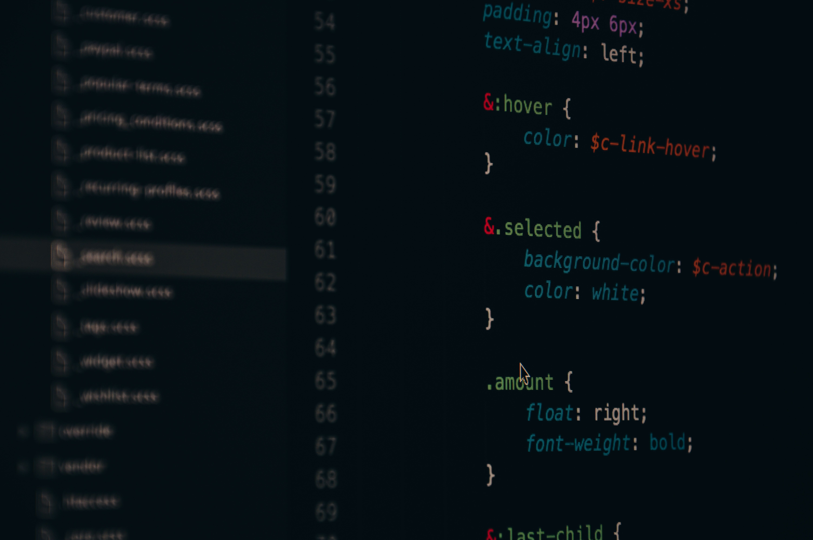

It is a place where everyone can learn and grow in the field of technology and analytics.
We have a team of experienced faculty members who are passionate about teaching and research.
Our department is dedicated to fostering an environment of innovation and discovery.

We are committed to providing a high-quality education and research environment.
Our goal is to prepare students for successful careers in the ever-evolving field of technology and analytics.

Our department is equipped with state-of-the-art facilities and resources to support our students and faculty in their academic and research endeavors.
We offer a wide range of courses and programs that cater to the diverse interests and career goals of our students.
